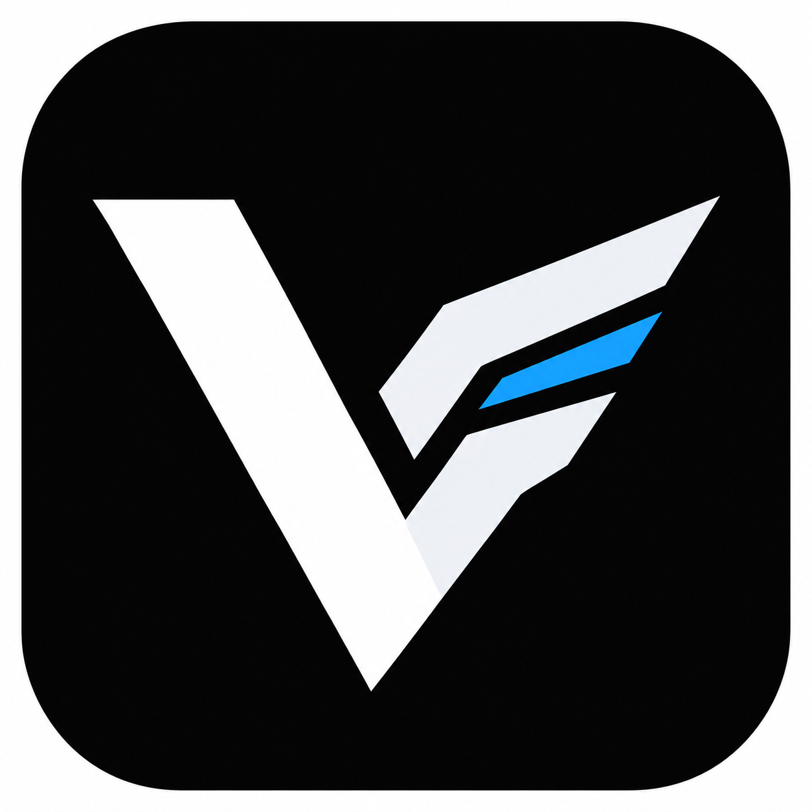
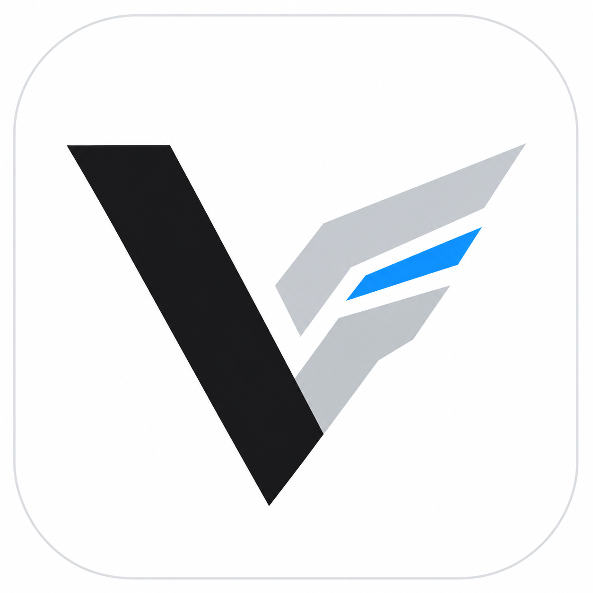

Dark modePrimary / 01

Depth in contrast.#0B0C0F / #FFFFFF / #2F80FF
Identity for the next move
VELCLAW là hệ thống nhận diện cho một ứng dụng công nghệ đi thẳng vào trọng tâm: rõ ràng trong trải nghiệm, sắc bén trong sản phẩm, và đủ linh hoạt để lớn lên cùng người dùng.
Không phải mọi sản phẩm cần nói to. VELCLAW chọn cách xuất hiện bằng một dấu hiệu đơn giản, một hệ thống nhất quán và một thái độ làm việc không thỏa hiệp.
Ít nhiễu hơn. Nhiều tín hiệu đúng hơn.
Thiết kế để hành động luôn có bước tiếp theo.
Khác biệt vừa đủ để được nhớ, sắc nét đủ để dẫn đường.
One mark, two atmospheres
Biểu tượng V + móng vuốt được giản lược thành các mặt phẳng hình học. Nó giữ sự chuyển động của một cánh vuốt đang vươn lên, nhưng vẫn đủ gọn để sống trong 24px.


Giữ khoảng trống tối thiểu bằng chiều rộng của nét V quanh biểu tượng.
Kích thước tối thiểu khuyến nghị: 24px cho UI, 48px cho app launcher.
Không kéo giãn, thêm hiệu ứng 3D hoặc thay đổi tỷ lệ các mảng hình học.
The quiet confidence
Hệ thống màu và chữ không cạnh tranh với sản phẩm. Chúng tạo bối cảnh để ý tưởng, dữ liệu và hành động nổi lên đúng lúc.
Inter giữ nét chữ trung tính, rõ ràng và hoạt động tốt trên mọi bề mặt sản phẩm. Tracking rộng hơn ở nhãn, chặt hơn ở headline.
VELCLAW creates room for better decisions. Every surface has a job, every detail has intent.
Identity in motion
Từ màn hình chào mừng đến dashboard, VELCLAW dùng cùng một ngôn ngữ: tương phản có chủ đích, nhịp điệu rõ ràng và luôn có một điểm để mắt dừng lại.
Logo, màu sắc, typography và motion cùng tạo nên cảm giác tin cậy ngay từ lần chạm đầu tiên.
Back to top ↗VELCLAW / Brand system
Hệ thống nhận diện đã sẵn sàng để đi cùng sản phẩm — từ logo đầu tiên đến trải nghiệm cuối cùng.